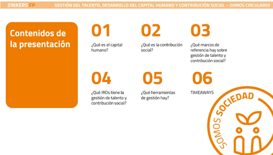

Actividad C5_S3_E1
Descripción: Presentación del tema
En esta presentación Gestión del talento, desarrollo del capital humano y contribución social se trabajarán los títulos del 01 al 05 que se detallan en la primera diapositiva de esta presentación, como se puede observar en la imagen que tienes a continuación:

Recurso: 🔗 Gestión del talento, desarrollo del capital humano y contribución social
Tarea:
01 ¿Qué es el capital humano?
- ¿Qué engloba el capital humano?
- ¿Qué implica el capital humano?
- ¿Qué beneficios suelen obtener las empresas y las naciones que invierten en la educación, la formación y el desarrollo de sus trabajadores?
- ¿Qué es la gestión del talento?
- ¿Cómo se integran el capital humano y la gestión del talento en la estrategia empresarial?
02 ¿Qué es la contribución social?
- ¿Qué es la contribución social empresarial?
- ¿Qué es el núcleo del negocio?
- ¿En qué consiste el desarrollo y adopción de una una política de Responsabilidad Social Corporativa (RSC)?
- ¿Cuáles son las diferencias entre Responsabilidad Social Corporativa y Acción Social?
03 ¿Qué marcos de referencia hay sobre gestión de talento y contribución social?
- Identifica los principales marcos de referencia sobre contribución social.
- Identifica los principales marcos de referencia sobre gestión de talento.
- Identifica las entidades de referencia.
04 ¿Qué IROs tiene la gestión de talento y contribución social?
- ¿Qué significan las siglas IROs?
- ¿Qué son los IROs?
- ¿Qué IROs puede tener la gestión del talento y contribución social?
05 ¿Qué herramientas de gestión hay?
- ¿Qué herramientas de gestión hay para la gestión de talento? Indica alguna norma que conozcas.
- ¿Qué ayuda aportan a las organizaciones?
- ¿Por qué es esencial la definición de objetivos e indicadores para la gestión de talento?
- ¿Qué herramientas de gestión hay para la contribución social? Indica alguna de ellas.
- Enumera algunas Certificaciones de Responsabilidad Social Corporativa (RSC).
- Define los indicadores que conoces para la contribución social.
06 TAKEAWAYS
- Identifica los conceptos clave sobre la gestión del talento, el desarrollo del capital humano y la contribución social.